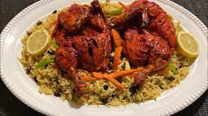

Xilib $19.00
Xilib is a tantalizing, mouthwatering Somali dish that will take your taste buds on a flavourful adventure. It features succulent marinated and grilled meat, like beef or goat, seasoned with aromatic spices for a burst of flavour. It is served alongside fragrant baaris and variety of condiments.Xilib is a true delight for your taste buds.It's symphony of flavours will leave you craving for more.

Digaag $18.00
Digaag, the mouthwatering Somali chicken dish, is a true culinary gem that will leave you craving for more. Our chefs take pride in marinating the chicken with a blend of aromatic spices, infusing it with incredible flavors. The tender chicken is then grilled to perfection, resulting in juicy and succulent bites. Served alongside fragrant basmati rice or traditional pasta, Digaag is a delightful combination of textures and flavours. It's a dish that will transport you to the vibrant streets of Somalia with every bite.

Baasto $7.00
Baasto is a delicious and comforting dish that combines the best of Italian and Somali cuisines. Picture perfectly cooked pasta tossed in a flavourful sauce made with a blend of aromatic spices, tomatoes, and other ingredients. It's a dish that brings together the richness of Somali flavours with the familiar comfort of pasta. Whether you prefer it with meat or vegetables, baasto is a crowd-pleaser that will satisfy your cravings.